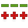

- 
- Check Out the Source Code
Browse our git repository and learn how to get the latest code.
- Contribute Code
Help improve Openbox by submitting patches for open bugs and feature requests.

- ObConf Source Code
Start by browsing the git repository. Instructions for using git also apply here.